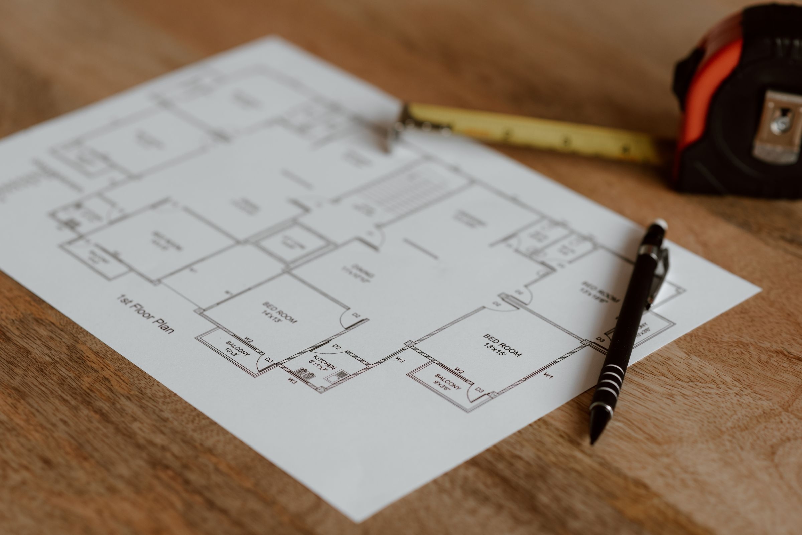

Projektleitung
Wir übernehmen Termin-, Kosten- und Qualitätsverantwortung für Ihr Projekt — als feste Ansprechperson zwischen Ihnen, Konstruktion, Entwicklung und Fertigung, von der ersten Planung bis zur Übergabe.

Ob Neuentwicklung oder Konstruktionsauftrag: Wir führen Ihr Projekt von der Planung bis zur Übergabe — koordinieren Gewerke, behalten Termine und Kosten im Blick und sorgen dafür, dass Entscheidungen dort ankommen, wo sie gebraucht werden.
Gerade wenn mehrere Parteien an einem Projekt beteiligt sind — Ihr Haus, Zulieferer, Fertigungspartner, allenfalls externe Prüfstellen — entstehen die grössten Verzögerungen nicht bei der eigentlichen Konstruktionsarbeit, sondern an den Schnittstellen dazwischen: eine Freigabe, die zu spät eintrifft, ein Missverständnis über den Lieferumfang, eine Änderung, die nicht bei allen Beteiligten ankommt. Genau dort setzt unsere Projektleitung an.
So haben Sie eine feste Ansprechperson, statt den Überblick über mehrere Schnittstellen selbst behalten zu müssen — und wissen jederzeit, wo Ihr Projekt steht.
So begleiten wir Ihr Projekt
Vier Phasen, eine durchgehende Verantwortung — von der ersten Skizze bis zur Übergabe der fertigen Lösung.
Planung
Anforderungen, Randbedingungen und Ziele klären. Wir erstellen einen realistischen Termin- und Kostenrahmen und legen die Meilensteine fest, an denen wir uns gemeinsam mit Ihnen messen lassen.
Konzeption
Konstruktion und Entwicklung erarbeiten die Lösung. Wir koordinieren die beteiligten Stellen, holen Freigaben rechtzeitig ein und halten Sie über Fortschritt und allfällige Zielkonflikte auf dem Laufenden.
Ausführung
Umsetzung bei Fertigung und Zulieferern. Wir verfolgen Termine und Qualität, greifen bei Abweichungen frühzeitig ein und sorgen dafür, dass Änderungen dokumentiert und an alle Beteiligten kommuniziert werden.
Übergabe
Abnahme, Dokumentation und Übergabe an Sie. Ein klarer Abschluss statt eines schleichenden Auslaufens — inklusive Rückblick, was gut lief und was wir für Folgeprojekte mitnehmen.
Eine Ansprechperson für alles
Statt selbst zwischen Konstruktion, Fertigung und allfälligen weiteren Partnern zu vermitteln, haben Sie eine feste Kontaktperson, die den Überblick über das gesamte Projekt behält — und die Verantwortung dafür auch trägt.
Das entlastet Ihr eigenes Team spürbar, gerade wenn Projektleitung nicht Ihre Kernkompetenz oder nicht Ihre verfügbare Kapazität ist.
Jederzeit wissen, wo das Projekt steht
Regelmässiges, knapp gehaltenes Reporting statt Status nur auf Nachfrage. Abweichungen von Termin, Kosten oder Umfang sprechen wir proaktiv an, statt sie erst beim Abschluss sichtbar zu machen.
So bleiben Entscheidungen bei Ihnen — wir liefern die Grundlage, auf der Sie sie treffen können.
Ein Projekt, das eine feste Leitung braucht?
Schildern Sie uns die Ausgangslage — wir sagen Ihnen ehrlich, wie wir helfen können.